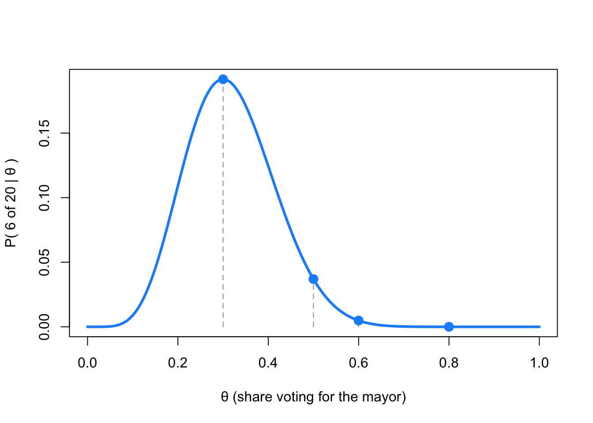
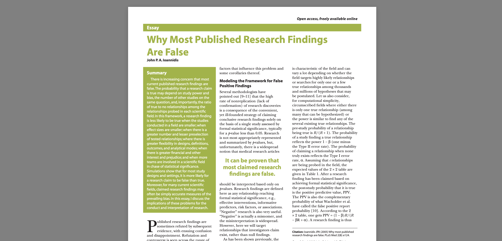
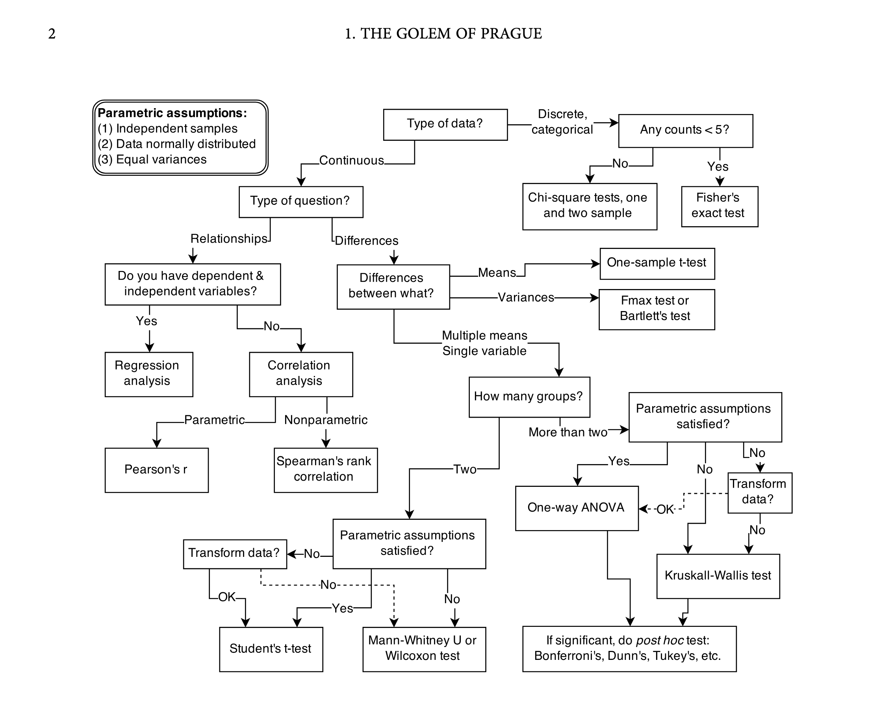

Data Lunch: Week 1
A Fresh Start
The Open Institute For Social Science
Most published research is false

https://journals.plos.org/plosmedicine/article?id=10.1371/journal.pmed.0020124…and that’s okay.
This week’s goals
- Unpack the key concepts underlying Ioannidis’s claim.
- Statistical significance
- The base rate paradox
- Start rebuilding statistics from the ground up.
Statistical significance
A result is statistically significant if, assuming the null hypothesis is true and the model assumptions hold, the probability of obtaining data at least as extreme as those observed (the p-value) is less than or equal to the chosen significance level α. This leads to rejection of the null hypothesis while controlling the long-run Type I error rate at α. (ChatGPT, 2026)
- If this confuses you, you’re not alone. It is deeply unintuitive.
- We are going to scrap all of this conceptual baggage and start over.
Probability
So what is probability? It’s just a way of talking about uncertainty.
There are two conventions worth knowing.
Probability
First convention: we measure probability as a number between 0 and 1 (0% to 100%).
In 2025, Kathmandu saw rain on 179 days:
- P( rain ) = 179 / 365 = 0.49 (49%)
Probability
Second convention: we write statements about probability as P( event ) or P( event | condition ).
We can do better with conditional probabilities:
- P( rain | Apr) = 13/30 (0.43)
- P( rain | Dec) = 0/31 (0.00)
- P( rain | Jul ) = 31/31 (1.00)
- P( rain | Feb ) = 2/28 (0.07)
Probability Examples
- P( bachelors degree )
- P( bachelors degree | urban )
- P( bachelors degree | rural )
- P( win | leading at halftime)
- P( disease | family history )
- P( rain today | rained yesterday )
- P( survival | attacked by bear )
Applied probability
In Nepal, HIV has a prevalence of about 0.1%. We can write that as:
- P( HIV+ ) = 0.001 (0.1%)
With statistical tests and predictions, we talk about two kinds of “accuracy”:
- Sensitivity: probability of a positive result testing a person who has HIV
- Specificity: probability of a negative test result testing a person who doesn’t have HIV
We can write these using our probability language:
- Sensitivity: P( test+ | HIV+ ) = 0.99 (99%)
- Specificity: P( test– | HIV– ) = 0.97 (97%)
Applied Probability (continued)
- Sensitivity P( test+ | HIV+ ): 99%
- Specificity P( test– | HIV– ): 97%
What about P( HIV+ | test+)? 3.2%
| (pop: 100,000) | Test+ | Test– |
|---|---|---|
| HIV+ (0.1% = 100) |
P( Test+ | HIV+ ): 99% Sensitivity (True Positive) (99) |
P( Test– | HIV+ ): 1% Type II Error (False Negative) (1) |
| HIV– (99.9% = 99,900) |
P( Test+ | HIV– ): 3% Type I Error (False Positive) (2,997) |
P( Test– | HIV– ): 97% Specificity (True Negative) (96,903) |
Paradox: P(A|B) is not the same as P(B|A)
Base Rate Paradox
#| '!! shinylive warning !!': |
#| shinylive does not work in self-contained HTML documents.
#| Please set `embed-resources: false` in your metadata.
#| standalone: true
# app.R
library(shiny)
library(bslib)
library(networkD3)
library(tibble)
library(munsell) # https://github.com/r-wasm/webr/issues/537
sankeyHeight <- 600
sankeyWidth <- 1000
ui <- page_sidebar(
tags$style(HTML(
"
p, ul { font-size: 90%; }
#sankeyWrap svg,
#sankeyWrap svg * {
filter: none !important;
box-shadow: none !important;
}
.sankey-tooltip {
position: absolute;
pointer-events: none;
z-index: 99999;
opacity: 0;
transition: opacity 80ms linear;
padding: 8px 10px;
border-radius: 6px;
background: rgba(20, 20, 20, 0.92);
color: #fff;
font-size: 12px;
line-height: 1.25;
box-shadow: 0 8px 24px rgba(0,0,0,0.25);
max-width: 280px;
}
.sankey-tooltip .label {
font-weight: 600;
margin-bottom: 2px;
}
.sankey-tooltip .value {
opacity: 0.9;
}
"
)),
sidebar = sidebar(
open = "always",
width = 400,
tags$h2("The Base Rate Paradox"),
p(
"Statistical tests help us evaluate the accuracy of prediction models. We often use tests to identify individuals with certain conditions or characteristics prevalent in our population."
),
tags$div(
tags$div(
"Rate of Prevalence: P( condition+ )",
style = "font-weight: bold;"
),
tags$p(
"Probability that a randomly selected individual has the condition.",
style = "font-style: italic;"
),
sliderInput(
inputId = "prevalence_pct",
label = NULL,
min = 0,
max = 10,
value = 0.1,
step = 0.1,
post = "%"
)
),
tags$hr(style = "margin: 1px 0"),
tags$div(
tags$p(
"Statistical tests are always imperfect. Their accuracy is usually summarized by two conditional rates:"
),
tags$div(
"Sensitivity: P( test+ | condition+ )",
style = "font-weight: bold;"
),
tags$p(
"Probability of a positive test among those with the condition (true positive rate)",
style = "font-style: italic;"
),
sliderInput(
inputId = "sensitivity_pct",
label = NULL,
min = 0,
max = 100,
value = 99,
step = 1,
post = "%"
),
tags$div(
"Specificity: P( test– | condition– )",
style = "font-weight: bold;"
),
tags$p(
"Probability of a negative test among those without the condition (true negative rate)",
style = "font-style: italic;"
),
sliderInput(
inputId = "specificity_pct",
label = NULL,
min = 0,
max = 100,
value = 97,
step = 1,
post = "%"
)
)
),
mainPanel(
width = 12,
tags$p(
"Sensitivity and specificity are important, but they can be misleading. They don't tell the whole story.",
tags$br(),
"Often, the kind of accuracy we are actually interested in understanding has the opposite conditional dependency."
),
tags$div(
tags$div(
tags$div(
"Positive Predictive Value: P( condition+ | test+ )",
style = "font-weight: bold;"
),
tags$p(
"Probability of a condition among those with a positive test",
style = "font-style: italic; margin-bottom: 0;"
)
),
tags$div(
textOutput("ppv_text"),
style = "font-size: 200%; font-weight: bold;"
),
style = "display: flex; gap: 40px; align-items: end;"
),
tags$hr(),
sankeyNetworkOutput(
"sankey",
width = paste0(sankeyWidth, "px"),
height = paste0(sankeyHeight, "px")
)
)
)
server <- function(input, output, session) {
ppv_reactive <- reactive({
prevalence <- input$prevalence_pct / 100
sensitivity <- input$sensitivity_pct / 100
specificity <- input$specificity_pct / 100
tp <- prevalence * sensitivity
fp <- (1 - prevalence) * (1 - specificity)
if ((tp + fp) == 0) NA_real_ else tp / (tp + fp)
})
nodes_reactive <- reactive({
tibble(
id = 0:6,
name = c(
"Population",
"Condition Present",
"Condition Absent",
"True Positive",
"False Positive",
"True Negative",
"False Negative"
),
group = c(
"population",
"present",
"absent",
"true",
"false",
"true",
"false"
)
) |>
as.data.frame()
})
links_reactive <- reactive({
population <- 100000
prevalence <- as.numeric(input$prevalence_pct) / 100
sensitivity <- as.numeric(input$sensitivity_pct) / 100
specificity <- as.numeric(input$specificity_pct) / 100
links <- tribble(
~source , ~target , ~value , ~title ,
0 , 1 , population * prevalence , "Condition Present" ,
0 , 2 , population * (1 - prevalence) , "Condition Absent" ,
2 , 5 , population * (1 - prevalence) * specificity , "True Negative" ,
1 , 6 , population * prevalence * (1 - sensitivity) , "False Negative" ,
1 , 3 , population * prevalence * sensitivity , "True Positive" ,
2 , 4 , population * (1 - prevalence) * (1 - specificity) , "False Positive"
) |>
as.data.frame()
# LinkGroup: inherit the source node's group -> links match/blend with node colors
node_groups <- nodes_reactive()$group
links$group <- node_groups[links$source + 1]
links
})
output$ppv_text <- renderText({
ppv <- ppv_reactive()
if (is.na(ppv)) "Undefined" else sprintf("%.2f%%", 100 * ppv)
})
output$sankey <- renderSankeyNetwork({
sankeyNetwork(
Links = links_reactive(),
Nodes = nodes_reactive(),
Source = "source",
Target = "target",
Value = "value",
NodeID = "name",
NodeGroup = "group",
# ---- link colors: CRAN networkD3 supports LinkGroup (not linkColourMode) ----
LinkGroup = "group",
fontSize = 14,
nodeWidth = 30,
iterations = 0,
margin = list(top = 5, right = 0, bottom = 5, left = 5),
sinksRight = TRUE,
# Use semi-transparent RGBA so links blend nicely with nodes
# (Nodes remain effectively opaque because they're solid rect fills)
colourScale = JS(
'd3.scaleOrdinal()
.domain(["population", "absent", "present", "true", "false"])
.range([
"#2f6088ff", // population
"#a5c5e2ff", // absent
"#468ec9ff", // present (slightly stronger)
"#3E5915", // true
"#A60F37" // false
])'
),
height = sankeyHeight,
width = sankeyWidth
) |>
htmlwidgets::onRender(
"
function(el) {
// remove native SVG tooltips
d3.select(el).selectAll('title').remove();
var fmt = d3.format(',.0f');
// tooltip div (one per widget)
var tipId = 'sankey-tooltip-' + el.id;
d3.select('body').select('#' + tipId).remove();
var tip = d3.select('body')
.append('div')
.attr('id', tipId)
.attr('class', 'sankey-tooltip')
.style('position', 'absolute')
.style('pointer-events', 'none')
.style('z-index', 99999)
.style('opacity', 0)
.style('padding', '8px 10px')
.style('border-radius', '6px')
.style('background', 'rgba(20,20,20,0.92)')
.style('color', '#fff')
.style('font-size', '12px')
.style('line-height', '1.25')
.style('box-shadow', '0 8px 24px rgba(0,0,0,0.25)');
function moveTip() {
var e = d3.event;
tip.style('left', (e.pageX + 12) + 'px')
.style('top', (e.pageY + 12) + 'px');
}
function showTip(label, value) {
tip.html(
'<div style=\"font-weight:600;\">' + label + '</div>' +
'<div>' + fmt(value) + '</div>'
).style('opacity', 1);
moveTip();
}
function hideTip() {
tip.style('opacity', 0);
}
// LINKS: Source -> Target + value
d3.select(el).selectAll('path.link')
.style('stroke-opacity', 0.55) // optional: strengthen link visibility
.on('mouseover.tooltip', function(d) {
showTip(d.source.name + ' \\u2192 ' + d.target.name, d.value);
})
.on('mousemove.tooltip', moveTip)
.on('mouseout.tooltip', hideTip);
// NODES: Name + value
d3.select(el).selectAll('.node rect')
.on('mouseover.tooltip', function(d) {
showTip(d.name, d.value);
})
.on('mousemove.tooltip', moveTip)
.on('mouseout.tooltip', hideTip);
}
"
)
})
}
shinyApp(ui, server)Direction of conditions
P(A|B) is not the same as P(B|A)
| Sociology | Economics | ||
|---|---|---|---|
| Urban | 240 | 300 | 540 |
| Rural | 80 | 20 | 100 |
| 320 | 320 |
P( Sociology | Rural ) = 80 / 100 = 0.80
P( Rural | Sociology ) = 80 / 320 = 0.25
Statistical significance (revisited)
Let’s look at that quote again:
A result is statistically significant if, assuming the null hypothesis is true and the model assumptions hold, the probability of obtaining data at least as extreme as those observed (the p-value) is less than or equal to the chosen significance level α. This leads to rejection of the null hypothesis while controlling the long-run Type I error rate at α.
Two key phrases:
- “assuming the null hypothesis is true”
- “the probability of…data…”
This frames statistical significance as:
- P( data | hypothesis )
Not the same as (what we usually actually want):
- P( hypothesis | data )
So why is most published research wrong?
It’s the same base rate problem as the HIV test:.
- A positive test → a significant result (p < 0.05)
- Having the disease → the hypothesis is actually true
- Interesting hypotheses are rare, the same way HIV is rare.
So most “significant” findings can be false positives, exactly as most positive HIV tests were.
The same table, relabeled
1% of tested hypotheses are true · 80% power · α = 5%
| 10,000 tested | Significant | Not significant |
|---|---|---|
| True (100) | 80 true positive (80%) |
20 false negative |
| False (9,900) | 495 false positive (5%) |
9,405 true negative |
P( true | significant ) = 80 / (80 + 495) ≈ 14%
About 86 of every 100 “discoveries” are false.
So why is most published research wrong?
That 14% was the optimistic case. It gets worse when:
- the base rate is even lower (genuinely novel ideas are rarer than 1%),
- studies are underpowered (real power is often much lower, even 20%),
- many comparisons are run, or results are p-hacked (effective α >> 5%).
The problem?
- Statistical significance goes against our natural intuitions about uncertainty.
- If statistics has ever made you feel dumb or intimidated, it’s not you…
- p-value is just a really weird concept.
Bayesian Updating
Bayesian Updating: What it is not

Statistical Rethinking, p.2 (Richard McElreath, 2020)
Bayesian Updating: What it is
Instead of tests, we have Bayesian Updating:
- We have a prior belief about the world (specifically, about a parameter or “estimand”).
I think that about 60% of Kathmandu will vote for the current mayor in the next election. - Then, we observe something, and we estimate the likelihood of what we saw given our prior belief.
I just took a survey, and only 30% of people said they will vote for the current mayor. This doesn’t really fit with what I expected. - This new observation changes our prior belief (challenging it or making it stronger), to become our posterior.
I now think that about 45% of Kathmandu will vote for the current mayor in the next election.
Bayesian Updating Example
#| '!! shinylive warning !!': |
#| shinylive does not work in self-contained HTML documents.
#| Please set `embed-resources: false` in your metadata.
#| standalone: true
library(shiny)
library(bslib)
library(shinyjs)
library(ggplot2)
library(ggiraph)
library(htmlwidgets)
library(uuid)
library(munsell) # https://github.com/r-wasm/webr/issues/537
TOTAL_STONES <- 9L
CONJECTURE <- vapply(
0:TOTAL_STONES,
function(x) paste0(strrep("🔵", x), strrep("⚫️", TOTAL_STONES - x)),
character(1)
)
SHIFT_HANDLER <- HTML(
"
document.addEventListener('keydown', function(e) {
if (e.key === 'Shift') {
const btn = document.getElementById('drawRandom');
if (btn) btn.innerText = 'Random × 10';
}
});
document.addEventListener('keyup', function(e) {
if (e.key === 'Shift') {
const btn = document.getElementById('drawRandom');
if (btn) btn.innerText = 'Random';
}
});
"
)
STYLE <- HTML(
"
h1 { margin-bottom: 0; }
p { font-size: 90%; }
/* Prevent table from graying out during recalculation */
#resultTable.recalculating { opacity: 1 !important; }
#resultTable.shiny-output-error,
#resultTable.shiny-output-error-validation { color: inherit; }
/* Shiny adds .shiny-recalculating to the output element while updating */
#resultTable.shiny-recalculating { opacity: 1 !important; }
#resultTable.shiny-recalculating:before { display: none !important; }
#resultTable table {
width: 100%;
table-layout: fixed;
}
#resultTable th:nth-child(1),
#resultTable td:nth-child(1) { width: 220px; }
#resultTable th:nth-child(3),
#resultTable td:nth-child(3) { width: 160px; direction: rtl }
#resultTable th:nth-child(4),
#resultTable td:nth-child(4) { width: 80px; }
/* --- Stop Shiny from dimming the table while recalculating --- */
/* Shiny uses .recalculating (not always .shiny-recalculating) */
#resultTable.recalculating,
#resultTable.shiny-recalculating {
opacity: 1 !important;
}
/* If opacity is applied in a way that affects children, force children too */
#resultTable.recalculating *,
#resultTable.shiny-recalculating * {
opacity: 1 !important;
}s
/* Shiny adds a spinner/overlay via pseudo-elements */
#resultTable.recalculating:before,
#resultTable.recalculating:after,
#resultTable.shiny-recalculating:before,
#resultTable.shiny-recalculating:after {
display: none !important;
content: none !important;
}
/* ---- full-height main panel + plot fills remaining space ---- */
html, body { height: 100%; }
.bslib-page-sidebar { height: 100vh; }
.bslib-page-sidebar .main {
height: 100%;
display: flex;
flex-direction: column;
min-height: 0;
}
#probabilityPlot_wrap {
flex: 1 1 auto;
min-height: 0;
width: 100%;
}
/* Ensure the htmlwidget + ggiraph wrappers and SVG fill the wrapper */
#probabilityPlot_wrap .html-widget,
#probabilityPlot_wrap .girafe_container,
#probabilityPlot_wrap svg {
width: 100% !important;
height: 100% !important;
}
"
)
format2 <- function(x, max_digits = 40L) {
x_chr_fixed <- format(
x,
scientific = FALSE,
trim = TRUE,
digits = 22
)
digit_count <- nchar(gsub("[^0-9]", "", x_chr_fixed))
ifelse(
is.na(x),
NA_character_,
ifelse(
digit_count > max_digits,
format(x, scientific = TRUE, trim = TRUE),
x_chr_fixed
)
)
}
format_probability <- function(x) {
if (is.na(x) || !is.finite(x)) {
return("")
}
if (x > 0 && x < 0.01) {
return("<0.01")
}
if (x < 1 && x > 0.995) {
return(">0.99")
}
sprintf("%.2f", x)
}
ui <- page_sidebar(
tags$script(SHIFT_HANDLER),
tags$style(STYLE),
shinyjs::useShinyjs(),
sidebar = sidebar(
open = "always",
width = 400,
h2("Bayesian Updating"),
p(
"Imagine you have a bag of 9 stones. Each stone is either blue or black, but you don't know how many of each color you have."
),
p(
"You can draw stones from the bag one at a time, noting down its color and then placing it back in the bag. The more you repeat this process, the more you can infer about the contents of the bag."
),
p(
"This graph represents a",
tags$b("probability distribution", .noWS = c("after")),
". From limited observations, we can never be absolutely certain of the contents of the bag, but we can say that some possibilities are more likely than others."
),
div(
id = "bagContents_wrap",
selectizeInput(
"bagContents",
"Contents of the bag:",
choices = c(
"Hidden" = "hidden",
"⚫️⚫️⚫️⚫️⚫️⚫️⚫️⚫️⚫️" = 0,
"🔵⚫️⚫️⚫️⚫️⚫️⚫️⚫️⚫️" = 1,
"🔵🔵⚫️⚫️⚫️⚫️⚫️⚫️⚫️" = 2,
"🔵🔵🔵⚫️⚫️⚫️⚫️⚫️⚫️" = 3,
"🔵🔵🔵🔵⚫️⚫️⚫️⚫️⚫️" = 4,
"🔵🔵🔵🔵🔵⚫️⚫️⚫️⚫️" = 5,
"🔵🔵🔵🔵🔵🔵⚫️⚫️⚫️" = 6,
"🔵🔵🔵🔵🔵🔵🔵⚫️⚫️" = 7,
"🔵🔵🔵🔵🔵🔵🔵🔵⚫️" = 8,
"🔵🔵🔵🔵🔵🔵🔵🔵🔵" = 9
)
)
),
div("Draw a stone:"),
div(
style = "display: flex; gap: 10px;",
actionButton("drawWhite", "⚫️"),
actionButton("drawBlue", "🔵"),
actionButton(
"drawRandom",
"Random",
style = "flex: 1;",
onclick = "
Shiny.setInputValue(
'drawRandom_n',
event.shiftKey ? 10 : 1,
{priority: 'event'}
);
"
)
),
actionButton("reset", "Reset", class = "btn-danger")
),
mainPanel(
width = 12,
uiOutput("dynamicHeader"),
tableOutput("resultTable"),
div(
id = "probabilityPlot_wrap",
ggiraph::girafeOutput("probabilityPlot")
)
)
)
server <- function(input, output, session) {
# webR/shinylive starts every session with the same fixed RNG seed, so the
# first sample() would otherwise be deterministic. Seed from sub-second wall
# clock to get fresh randomness per page load.
set.seed(as.integer((as.numeric(Sys.time()) * 1000) %% .Machine$integer.max))
bag_blue <- reactiveVal(NULL)
draws <- reactiveVal(character())
lik_hist <- reactiveVal(list())
max_hist <- 10L
observeEvent(
input$bagContents,
{
if (input$bagContents == "hidden") {
bag_blue(sample(0:TOTAL_STONES, 1))
} else {
bag_blue(as.integer(input$bagContents))
}
},
ignoreInit = FALSE
)
observeEvent(input$drawBlue, draws(c(draws(), "🔵")))
observeEvent(input$drawWhite, draws(c(draws(), "⚫️")))
observeEvent(
input$drawRandom_n,
{
req(!is.null(bag_blue()))
n_draws <- as.integer(input$drawRandom_n)
pool <- c(rep("🔵", bag_blue()), rep("⚫️", TOTAL_STONES - bag_blue()))
draws(c(draws(), sample(pool, n_draws, replace = TRUE)))
},
ignoreInit = TRUE
)
observeEvent(input$reset, {
draws(character())
lik_hist(list())
# bag_blue(sample(0:TOTAL_STONES, 1))
updateSelectizeInput(session, "bagContents", selected = "hidden")
})
observe({
has_draws <- length(draws()) > 0
if (has_draws) {
shinyjs::disable("bagContents")
shinyjs::enable("reset")
} else {
shinyjs::enable("bagContents")
shinyjs::disable("reset")
}
})
observe({
req(!is.null(bag_blue()))
tip <- sprintf("blue stones = %d (out of %d)", bag_blue(), TOTAL_STONES)
shinyjs::runjs(sprintf(
"$('#bagContents_wrap .selectize-control').attr('title', %s);",
shQuote(tip)
))
})
table_state <- reactive({
d <- draws()
n <- length(d)
header <- if (n == 0) {
"Draw Results"
} else if (n <= 20) {
paste(d, collapse = "\u00A0")
} else {
tbl <- sort(table(d), decreasing = TRUE)
labels <- paste(names(tbl), "×", as.integer(tbl))
paste(labels, collapse = ", ")
}
if (n == 0) {
df <- data.frame(
conjecture = CONJECTURE,
possibilities = "-",
total = "-",
probability = rep(1 / (TOTAL_STONES + 1), TOTAL_STONES + 1),
stringsAsFactors = FALSE
)
return(list(df = df, header = header))
}
factors <- lapply(
0:TOTAL_STONES,
function(bx) ifelse(d == "🔵", bx, TOTAL_STONES - bx)
)
formula <- vapply(
factors,
function(f) {
if (n <= 20) {
paste0(f, collapse = " × ")
} else {
tbl <- sort(table(f), decreasing = TRUE)
labels <- paste0(names(tbl), "<sup>", as.integer(tbl), "</sup>")
paste(labels, collapse = " × ")
}
},
character(1)
)
log_paths <- vapply(factors, function(f) sum(log(f)), numeric(1))
m <- max(log_paths)
paths_scaled <- exp(log_paths - m)
probability <- paths_scaled / sum(paths_scaled)
paths <- vapply(factors, prod, numeric(1))
df <- data.frame(
conjecture = CONJECTURE,
possibilities = formula,
total = format2(round(paths, 0)),
probability = probability,
stringsAsFactors = FALSE
)
list(df = df, header = header)
})
output$dynamicHeader <- renderUI({
h4(HTML(sprintf(
"<span style='letter-spacing:0.15em;'>%s</span>",
table_state()$header
)))
})
output$resultTable <- renderTable(
{
df <- table_state()$df
df$probability <- vapply(df$probability, format_probability, character(1))
df
},
striped = TRUE,
hover = TRUE,
bordered = FALSE,
spacing = "s",
rownames = FALSE,
width = "100%",
align = "llrr",
sanitize.text.function = function(x) x
)
probability_vector <- reactive(table_state()$df$probability)
observeEvent(
probability_vector(),
{
y <- probability_vector()
h <- lik_hist()
if (length(h) == 0 || !isTRUE(all.equal(h[[length(h)]], y))) {
h <- c(h, list(y))
if (length(h) > max_hist) {
h <- tail(h, max_hist)
}
lik_hist(h)
}
},
ignoreInit = TRUE
)
make_plot_data <- function(df, h) {
x <- 0:TOTAL_STONES
cur <- data.frame(
x = x,
y = df$probability,
conjecture = df$conjecture,
stringsAsFactors = FALSE
)
ghost_df <- NULL
if (length(h) > 1) {
ghosts <- h[-length(h)]
n_ghosts <- length(ghosts)
gray_vals_full <- as.integer(round(seq(240, 120, length.out = max_hist)))
gray_vals <- tail(gray_vals_full, n_ghosts)
ghost_cols <- rgb(gray_vals, gray_vals, gray_vals, maxColorValue = 255)
ghost_df <- do.call(
rbind,
lapply(seq_along(ghosts), function(i) {
data.frame(
step = i,
x = x,
y = ghosts[[i]],
col = ghost_cols[i],
stringsAsFactors = FALSE
)
})
)
}
list(cur = cur, ghost = ghost_df)
}
output$probabilityPlot <- ggiraph::renderGirafe({
df <- table_state()$df
h <- lik_hist()
pd <- make_plot_data(df, h)
cur <- pd$cur
ghost <- pd$ghost
cur$point_id <- paste0("curpt-", cur$x)
# Tooltip changes:
# - emoji line first (conjecture)
# - probability formatted like the table
cur$tooltip <- sprintf(
"%s\nBlue stones: %d\nprobability: %s",
cur$conjecture,
cur$x,
vapply(cur$y, format_probability, character(1))
)
p <- ggplot()
# ghosts
if (!is.null(ghost) && nrow(ghost) > 0) {
p <- p +
geom_line(
data = ghost,
aes(x = x, y = y, group = step, color = col),
linewidth = 0.7
) +
scale_color_identity()
}
# current: points only (line is drawn + animated in JS)
p <- p +
ggiraph::geom_point_interactive(
data = cur,
aes(x = x, y = y, tooltip = tooltip, data_id = point_id),
size = 2.6,
color = "black"
) +
scale_x_continuous(breaks = 0:TOTAL_STONES, limits = c(0, TOTAL_STONES)) +
scale_y_continuous(
limits = c(-0.05, 1.05),
expand = expansion(mult = c(0, 0.02))
) +
labs(x = "Number of blue stones", y = "probability") +
theme_minimal(base_size = 13) +
theme(panel.grid.minor = element_blank(), legend.position = "none")
g <- ggiraph::girafe(
ggobj = p,
width_svg = 12,
height_svg = 4,
options = list(
ggiraph::opts_sizing(rescale = FALSE),
ggiraph::opts_hover(css = "fill:black; r:5px;"),
ggiraph::opts_tooltip(
css = "background-color: white; border: 1px solid #999; padding: 6px; border-radius: 4px;"
)
)
)
g$x$step <- length(draws())
htmlwidgets::onRender(
g,
"
function(el, x) {
var svg = el.querySelector('svg');
if (!svg) return;
// Let SVG stretch to match the available rectangle
svg.setAttribute('preserveAspectRatio', 'none');
svg.setAttribute('width', '100%');
svg.setAttribute('height', '100%');
// Hide immediately to prevent flash of new final coordinates
svg.style.visibility = 'hidden';
var step = x.step;
function getPoints() {
var pts = Array.prototype.slice.call(svg.querySelectorAll('[data-id^=\"curpt-\"]'));
var arr = pts.map(function(pt) {
var id = pt.getAttribute('data-id');
var idx = parseInt(id.replace('curpt-', ''), 10);
return {
id: id,
idx: idx,
el: pt,
cx: parseFloat(pt.getAttribute('cx')),
cy: parseFloat(pt.getAttribute('cy'))
};
}).filter(function(d) {
return isFinite(d.idx) && isFinite(d.cx) && isFinite(d.cy);
});
arr.sort(function(a,b){ return a.idx - b.idx; });
return arr;
}
function ensureLine() {
var line = svg.querySelector('#curline-js');
if (!line) {
line = document.createElementNS('http://www.w3.org/2000/svg', 'path');
line.setAttribute('id', 'curline-js');
line.setAttribute('fill', 'none');
line.setAttribute('stroke', 'black');
line.setAttribute('stroke-width', '2.2');
line.setAttribute('stroke-linecap', 'round');
line.setAttribute('stroke-linejoin', 'round');
svg.appendChild(line);
}
return line;
}
function pathFromXY(xy) {
if (!xy || xy.length === 0) return '';
var d = 'M ' + xy[0].cx + ' ' + xy[0].cy;
for (var i=1; i<xy.length; i++) d += ' L ' + xy[i].cx + ' ' + xy[i].cy;
return d;
}
function ease(u) {
return u < 0.5 ? 4*u*u*u : 1 - Math.pow(-2*u + 2, 3)/2;
}
function setToPts(ptsArr, pts, line) {
for (var i=0; i<ptsArr.length; i++) {
ptsArr[i].el.setAttribute('cx', pts[i].cx);
ptsArr[i].el.setAttribute('cy', pts[i].cy);
ptsArr[i].el.removeAttribute('transform');
}
line.setAttribute('d', pathFromXY(pts));
}
// More responsive feel:
// - shorter debounce before starting animation
// - slightly shorter duration
var DEBOUNCE_MS = 55; // was 100
var DURATION_MS = 360; // was 450
function animateFromTo(ptsArr, startPts, endPts, line, durationMs, onDone) {
if (el.__animCancel) el.__animCancel();
var t0 = null;
var cancelled = false;
el.__animCancel = function(){ cancelled = true; };
el.__animating = true;
el.__animTargetPts = endPts;
// Put at start before showing
setToPts(ptsArr, startPts, line);
// Show once start state is in place
svg.style.visibility = 'visible';
ptsArr.forEach(function(d){ d.el.style.pointerEvents = 'none'; });
function frame(ts) {
if (cancelled) return;
if (t0 === null) t0 = ts;
var u = Math.min(1, (ts - t0) / durationMs);
var e = ease(u);
var interp = new Array(endPts.length);
for (var i=0; i<endPts.length; i++) {
var a = startPts[i], b = endPts[i];
interp[i] = {
cx: a.cx + (b.cx - a.cx) * e,
cy: a.cy + (b.cy - a.cy) * e
};
}
el.__curLinePts = interp;
for (var j=0; j<ptsArr.length; j++) {
ptsArr[j].el.setAttribute('cx', interp[j].cx);
ptsArr[j].el.setAttribute('cy', interp[j].cy);
}
line.setAttribute('d', pathFromXY(interp));
if (u < 1) {
requestAnimationFrame(frame);
} else {
setToPts(ptsArr, endPts, line);
ptsArr.forEach(function(d){ d.el.style.pointerEvents = ''; });
el.__animating = false;
el.__animCancel = null;
el.__curLinePts = endPts;
if (typeof onDone === 'function') onDone();
}
}
requestAnimationFrame(frame);
}
function finishAnimationNow(ptsArr, line) {
if (el.__animating && el.__animTargetPts && el.__prevLinePts) {
if (el.__animCancel) el.__animCancel();
setToPts(ptsArr, el.__animTargetPts, line);
ptsArr.forEach(function(d){ d.el.style.pointerEvents = ''; });
el.__animating = false;
el.__animCancel = null;
el.__prevLinePts = el.__animTargetPts;
el.__curLinePts = el.__animTargetPts;
}
}
// Read new rendered final positions (but hidden)
var ptsArr = getPoints();
var nextPts = ptsArr.map(function(d){ return { cx: d.cx, cy: d.cy }; });
var line = ensureLine();
// First render: snap and show
if (el.__lastStep === undefined || el.__prevLinePts === undefined) {
el.__lastStep = step;
el.__prevLinePts = nextPts;
el.__curLinePts = nextPts;
setToPts(ptsArr, nextPts, line);
svg.style.visibility = 'visible';
return;
}
// No new draw: keep synced and show
if (step === el.__lastStep) {
el.__prevLinePts = nextPts;
el.__curLinePts = nextPts;
setToPts(ptsArr, nextPts, line);
svg.style.visibility = 'visible';
return;
}
// Defensive: mismatch => snap and show
if (el.__prevLinePts.length !== nextPts.length || nextPts.length === 0) {
el.__lastStep = step;
el.__prevLinePts = nextPts;
el.__curLinePts = nextPts;
setToPts(ptsArr, nextPts, line);
svg.style.visibility = 'visible';
return;
}
// Coalesce rapid updates
finishAnimationNow(ptsArr, line);
el.__pendingStep = step;
el.__pendingNextPts = nextPts;
if (el.__debounceTimer) clearTimeout(el.__debounceTimer);
el.__debounceTimer = setTimeout(function() {
if (!el.__pendingNextPts) return;
var targetPts = el.__pendingNextPts;
var targetStep = el.__pendingStep;
el.__pendingNextPts = null;
el.__pendingStep = null;
var startPts = el.__prevLinePts;
animateFromTo(ptsArr, startPts, targetPts, line, DURATION_MS, function() {
el.__lastStep = targetStep;
el.__prevLinePts = targetPts;
el.__curLinePts = targetPts;
});
}, DEBOUNCE_MS);
// While we wait for debounce, show the baseline (current) state, not the new final state
setToPts(ptsArr, el.__prevLinePts, line);
svg.style.visibility = 'visible';
}
"
)
})
}
shinyApp(ui, server)Bayes Theorem
\[ P(A|B) = \frac{P(B|A)\,P(A)}{P(B)} \]
or
\[ \color{green}{P(\text{belief} \mid \text{data})} = \frac{ \color{#1b91ff}{P(\text{data} \mid \text{belief})} \;\color{#ff2c2d}{P(\text{belief})} }{ \color{#999}{P(\text{data})} } \]
- P(data | belief): likelihood
- P(belief): prior probability
- P(belief | data): posterior probability
- P(data): marginal likelihood (not interesting)
In simple terms:
- prior × likelihood => posterior
Statistics is observation
- When we do ethnography, we expect our data to be messy.
- We build knowledge not from one observation but from a process of theory building based on many observations.
- We need to start thinking about statistics in the same way.
Practical Work: Election polling
The Bayesian workflow
- Scientific model: what we believe about the world, before any statistics.
- Ask the question: say in plain words what you want to know.
- Draw the causal model (DAG): your assumptions about what causes what, from domain knowledge.
- Define the estimand: state precisely what you want to know before touching data.
- Simulate the population: write a generative simulation that could produce data like yours.
- Statistical model: the machinery that turns data into an estimate, tested where we already know the truth.
- Write the formal model: derive the statistical model from the DAG, in mathematical notation.
- Write the Stan code: translate the formal model into a program.
- Test on simulated data: check that the model recovers known parameters, and that the priors imply plausible data.
- Analysis: the real data, the estimate, and how far to trust it.
- Fit and validate the model: run the sampler, check diagnostics (R-hat, ESS, trace plots, divergences), and run posterior predictive checks. Is the model trustworthy?
- Compute the estimate: poststratify to get the vote share, with its uncertainty.
- Test its robustness: run sensitivity analyses on turnout, poststratification targets, priors, and unmodeled non-response. How much does the estimate depend on our assumptions?
Demonstration: Will the mayor win?
Let’s walk through the simplest possible version of this workflow.
- Estimand: θ, the share of Kathmandu voters who will vote for the current mayor.
- Background: in the last election, the mayor got 60% of the vote.
- Data: we survey n voters at random, and k of them say they will vote for the mayor.
A deliberately simple model
Each respondent is like a coin flip that comes up “mayor” with probability θ. No weighting, no turnout, no non-response, no post-stratification. We’ll add those later.
\[ \begin{aligned} k &\sim \text{Binomial}(n,\ \theta) && \color{#1b91ff}{\text{likelihood}} \\ \theta &\sim \text{your prior} && \color{#ff2c2d}{\text{prior}} \end{aligned} \]
Step 1: The prior
Before seeing any survey, what do you believe about θ? Drag the points.
Step 2: The likelihood
We survey 20 voters. 6 of them (30%) say they will vote for the mayor.
How consistent is “6 of 20” with each possible value of θ?
- If θ = 30%: P( 6 of 20 ) = 0.192
- If θ = 50%: P( 6 of 20 ) = 0.037
- If θ = 60%: P( 6 of 20 ) = 0.005
- If θ = 80%: P( 6 of 20 ) = 0.0000017
The likelihood is not a belief. It’s what the coin-flip process in the world says about our data, one candidate value of θ at a time.
Step 3: Prior × likelihood → posterior
| Prior | Posterior | |
|---|---|---|
| Best guess | ||
| 90% range | ||
| P( mayor wins ) |
What to try
- Flat prior vs. strong prior. Draw a flat prior, then a narrow one around 60% (last election). With the same survey, how far apart are the posteriors?
- More data. Keep the survey at 30%, but raise n from 20 to 500. What happens to the prior’s influence?
- Updating in sequence. Make the posterior your new prior, then run a second survey. Yesterday’s posterior is today’s prior.
- Answering the real question. P( mayor wins ) is a direct statement about the hypothesis given the data: P( hypothesis | data ), not a p-value.
What is the result, and how much does it depend on our assumptions? This is that question, in miniature.